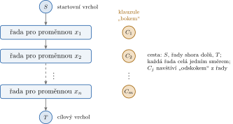
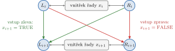
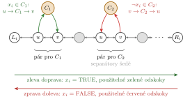
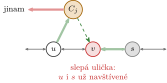
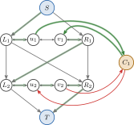
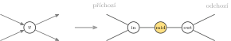
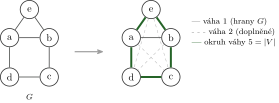

11.1 Hamiltonovská cesta¶
Problém 11.1: \(\prob{Directed Hamiltonian Path}\) (DHP)
Vstup: orientovaný graf \(G=(V,E)\) a vrcholy \(S,T\).
Otázka: existuje v \(G\) orientovaná cesta z \(S\) do \(T\), která navštíví každý vrchol právě jednou?
Problém nese jméno W. R. Hamiltona (hlavolam Icosian game, 1857) a úzce souvisí s obchodním cestujícím (\(\href{../ch-ts/ch-ts-optimalizacni-vs-rozhodovaci-problemy.html#prob-tsp}{\class{woo-pk-prob-tsp}{\prob{TSP}}}\), problém 1.3): tam mají hrany váhy a hledáme hamiltonovskou kružnici nejmenší váhy. \(\href{#prob-dhp}{\class{woo-pk-prob-dhp}{\prob{DHP}}}\in\href{../ch-np/ch-np-tridy-nedeterministicke-casove-slozitosti.html#def-ntime}{\class{woo-pk-def-ntime}{\NP}}\) – certifikátem je pořadí vrcholů.
11.1.1 \(\prob{3-SAT}\redp\prob{DHP}\)¶
Redukce: \(\href{../ch-sat/ch-sat-sat-3-sat.html#red-sat3sat}{\class{woo-pk-pojem-3sat}{\prob{3-SAT}}} \mathrel{\href{../ch-redukce/ch-redukce-jak-porovnat-slozitost-dvou-problemu.html#def-redukce}{\class{woo-pk-def-redukce}{\redp}}} \href{#prob-dhp}{\class{woo-pk-prob-dhp}{\prob{DHP}}}\)
formule \(\Phi\) \(\;\longmapsto\;\) \((G_\Phi,S,T)\)
Mějme formuli \(\Phi\) s proměnnými \(x_1,\dots,x_n\) a klauzulemi \(C_1,\dots,C_m\). Postavíme orientovaný graf, v němž hamiltonovská cesta „vyřeší“ formuli.
Makro-pohled. Cesta začíná v \(S\), postupně (shora dolů) projde řadami proměnných \(x_1,\dots,x_n\) a skončí v \(T\). Každá klauzule je jediný samostatný vrchol \(C_j\) „bokem“.

Gadget proměnné (rozhodovací řada). Řada pro \(x_i\) je posloupnost vrcholů propojených obousměrně; na koncích jsou vrcholy \(L_i\) a \(R_i\). Má-li cesta projít všechny vrcholy řady, musí ji projít z jednoho konce na druhý:
- zleva doprava (\(L_i\to R_i\)) \(\iff x_i=\mathrm{TRUE}\),
- zprava doleva (\(R_i\to L_i\)) \(\iff x_i=\mathrm{FALSE}\).
Změna směru uprostřed řady by nechala některé vrcholy nenavštívené. Konce \(L_i,R_i\) spojíme se začátky \(L_{i+1},R_{i+1}\) všemi čtyřmi orientovanými hranami (\(L_i\to L_{i+1}\), \(L_i\to R_{i+1}\), \(R_i\to L_{i+1}\), \(R_i\to R_{i+1}\)), dále \(S\to L_1,R_1\) a \(L_n,R_n\to T\). Ať řadu \(x_i\) opustíme kterýmkoli koncem, do řady \(x_{i+1}\) můžeme vstoupit z obou stran – volby jednotlivých proměnných jsou nezávislé.

Gadget klauzule (odskok). Pro každou klauzuli \(C_j\) má každá řada vyhrazený pár sousedních vrcholů \(u,v\) (\(u\) vlevo). Mezi páry leží separátor bez odskoků; řada má tedy tvar
- \(x_i\in C_j\) (pozitivní literál): hrany \(u_{ij}\to C_j\to v_{ij}\). Jdeme-li zleva doprava, můžeme z \(u\) odbočit do \(C_j\) a vrátit se do \(v\) – žádný vrchol řady nevynecháme.
- \(\lnot x_i\in C_j\) (negativní literál): hrany naopak, \(v_{ij}\to C_j\to u_{ij}\); odskok jde použít jen při průchodu zprava doleva.

Nelegální zkratka
Co brání cestě, aby z \(u\) odskočila do \(C_1\) a místo návratu do \(v\) pokračovala jinam (třeba do řady \(x_2\))? Argument „do řady \(x_1\) se už nevrátím“ neplatí – přes vrchol jiné klauzule se do řady \(x_1\) vrátit lze. Potřebujeme lokální argument – a ten dává následující lemma.
Lemma 11.2: O odskoku
Vstoupí-li hamiltonovská cesta z vrcholu \(u\) do \(C_j\), pak z \(C_j\) pokračuje do \(v\) (druhého vrcholu téhož páru). Symetricky pro odskok \(v\to C_j\to u\).
Důkaz
Pozitivní případ (hrany \(u\to C_j\to v\)). Kdyby cesta z \(C_j\) odešla jinam, do \(v\) už lze vstoupit jen z pravého souseda \(s\) (z \(u\) cesta odešla do \(C_j\), \(C_j\) je použitý). Z \(v\) pak vedou hrany jen do \(u\) a do \(s\) – oba už navštívené – a hrana \(v\to C_j\) neexistuje. Vrchol \(v\) je slepá ulička, a protože to není \(T\), nemůže cesta pokračovat. Spor.

Příklad 11.3: \(\Phi=(x_1\lor\lnot x_2)\), ohodnocení \(x_1=x_2=\mathrm{TRUE}\)
Jediná klauzule se dvěma literály, takže každá řada je jen \(L_i,u_i,v_i,R_i\) (žádné separátory). Klauzuli \(C_1\) obslouží literál \(x_1\): řada \(x_1\) jde zleva doprava a odskočí do \(C_1\) (zeleně). Řada \(x_2\) jde také zleva doprava, takže svůj (červený) odskok \(v_2\to C_1\to u_2\) použít nemůže – a ani nepotřebuje.
Řešení

Hamiltonovská cesta (silně zeleně): \(S\to L_1\to u_1\to C_1\to v_1\to R_1\to L_2\to u_2\to v_2\to R_2\to T\).
Věta 11.4
\(\href{#prob-dhp}{\class{woo-pk-prob-dhp}{\prob{DHP}}}\) je NP-úplný.
Důkaz
(\(\Rightarrow\)) Splnitelná formule dává cestu. Mějme splňující ohodnocení. Začneme v \(S\), řadu \(x_i\) projdeme zleva doprava, je-li \(x_i=\mathrm{TRUE}\), jinak zprava doleva. V každé klauzuli \(C_j\) je aspoň jeden pravdivý literál; pro první z nich (řekněme z proměnné \(x_k\)) odskočíme z řady \(x_k\) do \(C_j\) – směr průchodu řadou \(x_k\) tento odskok právě umožňuje. Z poslední řady dojdeme do \(T\). Prošli jsme všechny vrcholy řad a každý vrchol klauzule právě jednou.
(\(\Leftarrow\)) Cesta dává splňující ohodnocení. Podle lemmatu 11.2 jsou odskoky jen vložky \(u\to C_j\to v\) (resp. \(v\to C_j\to u\)). Vypustíme-li je, zbude cesta přes samotné řady – a ta musí každou řadu projít celou jedním směrem. Ohodnocení přečteme ze směrů: zleva doprava \(\Rightarrow x_i=\mathrm{TRUE}\), zprava doleva \(\Rightarrow x_i=\mathrm{FALSE}\). Cesta navštíví každý \(C_j\), a to odskokem z nějaké řady \(x_k\). Pozitivní odskok jde použít jen zleva doprava, negativní jen zprava doleva, takže příslušný literál je pravdivý. Každá klauzule obsahuje pravdivý literál.
Velikost: \(|V|=2+m+n(3m+1)=O(nm)\), redukce je polynomiální.
11.1.2 Rodina sekvenčních problémů¶
Z \(\href{#prob-dhp}{\class{woo-pk-prob-dhp}{\prob{DHP}}}\) plyne těžkost dalších problémů už jen lokálními úpravami.
11.1.3 \(\prob{DHP}\redp\prob{UHP}\) (neorientovaná hamiltonovská cesta)¶
Redukce: \(\href{#prob-dhp}{\class{woo-pk-prob-dhp}{\prob{DHP}}} \mathrel{\href{../ch-redukce/ch-redukce-jak-porovnat-slozitost-dvou-problemu.html#def-redukce}{\class{woo-pk-def-redukce}{\redp}}} \href{#ch-cisla-dhp-uhp}{\class{woo-pk-pojem-uhp}{\prob{UHP}}}\)
orientovaný \((G,S,T)\) \(\;\longmapsto\;\) neorientovaný \((G',S_{\mathrm{in}},T_{\mathrm{out}})\)
Každý vrchol \(v\) rozštěpíme na cestu \(v_{\mathrm{in}}-v_{\mathrm{mid}}-v_{\mathrm{out}}\); orientovaná hrana \(u\to v\) se stane neorientovanou hranou \(\{u_{\mathrm{out}},v_{\mathrm{in}}\}\). Vrchol \(v_{\mathrm{mid}}\) má stupeň 2, a vynutí tak průchod „skrz“ ve správném směru (do \(v_{\mathrm{in}}\) se vchází, z \(v_{\mathrm{out}}\) odchází).

11.1.4 \(\prob{DHP}\redp\prob{HC}\) (hamiltonovská kružnice)¶
Redukce: \(\href{#prob-dhp}{\class{woo-pk-prob-dhp}{\prob{DHP}}} \mathrel{\href{../ch-redukce/ch-redukce-jak-porovnat-slozitost-dvou-problemu.html#def-redukce}{\class{woo-pk-def-redukce}{\redp}}} \href{#ch-cisla-dhp-hc}{\class{woo-pk-pojem-hc}{\prob{HC}}}\)
\((G,S,T)\) \(\;\longmapsto\;\) \(G+(T\to S)\)
V naší konstrukci do \(S\) žádná hrana nevede a z \(T\) žádná nevychází, takže stačí přidat hranu \(T\to S\): každá hamiltonovská kružnice ji musí použít a po jejím odebrání zbude hamiltonovská cesta \(S\leadsto T\). Stejné štěpení vrcholů pak dá i neorientovanou \(\href{#ch-cisla-dhp-hc}{\class{woo-pk-pojem-hc}{\prob{HC}}}\). (Pro obecný vstup \(\href{#prob-dhp}{\class{woo-pk-prob-dhp}{\prob{DHP}}}\) (kde do \(S\) hrany vést mohou) by se nejdřív přidaly nové vrcholy \(S'\to S\) a \(T\to T'\) a hrana \(T'\to S'\).)
11.1.5 \(\prob{HC}\redp\prob{TSP}\)¶
Redukce: \(\href{#ch-cisla-dhp-hc}{\class{woo-pk-pojem-hc}{\prob{HC}}} \mathrel{\href{../ch-redukce/ch-redukce-jak-porovnat-slozitost-dvou-problemu.html#def-redukce}{\class{woo-pk-def-redukce}{\redp}}} \href{../ch-ts/ch-ts-optimalizacni-vs-rozhodovaci-problemy.html#prob-tsp}{\class{woo-pk-prob-tsp}{\prob{TSP}}}\)
neorientovaný \(G\) \(\;\longmapsto\;\) \((K_{|V|},\ w\in\{1,2\},\ k=|V|)\)
Úplný graf na vrcholech \(G\); hrany z \(G\) mají váhu 1, doplněné hrany váhu 2, a \(k=|V|\). Okruh má přesně \(|V|\) hran, takže váhu \(\le|V|\) má právě tehdy, když používá jen hrany váhy 1 – tedy je to hamiltonovská kružnice v \(G\).

Poznámka
Váhy jsou jen \(\{1,2\}\) – \(\href{../ch-ts/ch-ts-optimalizacni-vs-rozhodovaci-problemy.html#prob-tsp}{\class{woo-pk-prob-tsp}{\prob{TSP}}}\) je tedy těžký i s malými čísly. Na to se odvoláme v oddílu o silné NP-úplnosti.
11.1.6 \(\prob{HP}\redp\prob{Longest Path}\)¶
Problém 11.5: \(\prob{Longest Path}\) (nejdelší cesta)
Vstup: graf \(G=(V,E)\) a číslo \(k\).
Otázka: existuje v \(G\) cesta (bez opakování vrcholů) s alespoň \(k\) hranami?
Redukce: \(\href{ch-cisla-ulohy-navic.html#un-11-3}{\class{woo-pk-pojem-hp}{\prob{(U)HP}}} \mathrel{\href{../ch-redukce/ch-redukce-jak-porovnat-slozitost-dvou-problemu.html#def-redukce}{\class{woo-pk-def-redukce}{\redp}}} \href{#prob-longpath}{\class{woo-pk-prob-longpath}{\prob{Longest Path}}}\)
\(G\) \(\;\longmapsto\;\) \((G,\ k=|V|-1)\)
Cesta s \(|V|-1\) hranami navštíví všech \(|V|\) vrcholů, je to tedy přesně hamiltonovská cesta. (Pro verzi s pevnými konci \(S,T\) hledáme cestu \(S\leadsto T\) s alespoň \(|V|-1\) hranami.)
Nejkratší vs. nejdelší
Nejkratší cesta je v \(\href{../ch-cas/ch-cas-tridy-p-a-exp.html#def-tridy}{\class{woo-pk-def-tridy}{\PP}}\) (BFS, Dijkstra), nejdelší je NP-těžká. Rozdíl: u nejkratší cesty se „zákaz opakování vrcholů“ dodrží sám od sebe (opakování by cestu jen prodloužilo), u nejdelší ho musíme hlídat – a právě v tom je ukrytá hamiltonovskost.